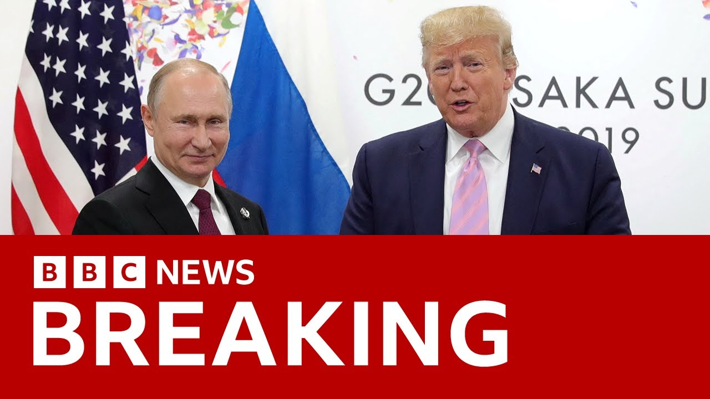

【美国总统特朗普称俄罗斯和乌克兰将"立即"开始停火谈判 | BBC新闻】
Summary: US and Russian leaders discussed Ukraine ceasefire in a positive phone call, with Trump announcing immediate negotiations but no major breakthrough.
摘要： 美俄领导人就乌克兰停火进行了积极通话，特朗普宣布立即展开谈判但未取得重大突破。

⏱️ Estimated Reading Time: 10 min
President Donald Trump and Russian President Vladimir Putin have both been reacting positively after they spent two hours talking on the phone.
美国总统特朗普与俄罗斯总统普京在进行了两小时电话交谈后均作出积极回应。
It comes as Washington continues to push to end the fighting in Ukraine.
此次通话正值华盛顿持续推动结束乌克兰冲突之际。
Well, in the last hour, the American leader has posted on social media about the talks.
就在过去一小时，这位美国领导人在社交媒体上发文谈及此次对话。
He said he believes the call went very well, adding that Russia and Ukraine will immediately start negotiations towards a ceasefire and more importantly bring an end to the war.
他表示相信通话非常顺利，并称俄乌将立即开始停火谈判，更重要的是结束战争。
He went on the tone and spirit of the conversation were excellent before adding that Russia wants to do largescale trade with the United States when this catastrophic bloodbath is over.
他接着表示会谈基调与氛围极佳，并补充说俄罗斯希望在这场灾难性杀戮结束后与美国开展大规模贸易。
And I agree.
我同意。
Let's go straight to our correspondent at the White House, Nomia Ikbal.
现在直接连线白宫记者诺米娅·伊克巴尔。
Nomia, just to be clear, first of all, we're talking here about negotiations about a ceasefire.
诺米娅，首先需要明确的是，我们讨论的是关于停火的谈判。
Uh not negotiations exactly about ending the war permanently.
呃，并非直接关于永久结束战争的谈判。
That's correct.
确实如此。
And there's no breakthrough, I would say, in those peace negotiations.
我认为这些和平谈判并未取得突破。
And I would say that President Trump portrayed this uh conversation more positively than Vladimir Putin did.
而且我认为特朗普总统对此次通话的描述比普京更为积极。
He talked about possible future peace agreements.
他谈到了未来可能达成的和平协议。
Donald Trump uh said that uh he well I mean he he said that as you mentioned there, the conversation was uh warm and friendly.
特朗普表示，呃，正如你提到的，会谈气氛热情友好。
uh but he focused a lot more on the economic benefits that uh might be in store for Russia and Ukraine when the war ends.
但他更多聚焦于战争结束后俄乌可能获得的经济利益。
Essentially what it sounds like is President Trump is saying it's up to both sides to work it out and essentially come up with the conditions for for a negotiation for a ceasefire and ultimately to to end the war.
本质上特朗普是在表示应由双方协商解决，制定停火谈判条件并最终结束战争。
And it's up to them to to decide.
这取决于他们的决定。
And so it's not really the US walking away.
因此美国并非真正抽身而退。
It sounds like they will continue to push both sides to to to to work it out, but ultimately he's letting them decide and that's where I think there is that huge challenge because we know that there are things that Russia will not concede on and there are things that Ukraine will not concede on.
听起来美国会继续推动双方协商，但最终由他们决定——我认为这正是巨大挑战所在，因为俄乌双方都有绝不妥协的立场。
Uh Mr. Trump did say that he has informed President Zilinski as well as other key allies including uh the European Commissioner about the phone conversation.
特朗普确实表示已向泽连斯基总统及欧盟委员会主席等关键盟友通报通话内容。
But as I say, there was no major breakthrough uh in that conversation and I I don't I don't think there was expected to be.
但正如我所说，通话未取得重大突破，且我认为本就无人预期会有突破。
Okay, Nomia, thank you very much for that.
好的，非常感谢诺米娅的报道。
Nomia at the White House for us.
白宫记者诺米娅为您报道。
Well, the Russian leader has also been speaking about that conversation.
俄罗斯领导人也对此次通话发表了看法。
President Putin said it was in his words very informative and quite a frank talk.
普京总统称这是一次信息量很大且相当坦率的谈话。
Take a listen.
请听以下内容。
We agreed with the president of the United States that Russia will propose and is ready to work with the Ukrainian side on a memorandum regarding a possible future peace treaty outlining a number of positions such as the principles of resolution, the timeline for a potential peace agreement and so on, including the possible sessation of hostilities for a certain period in the event of reaching specific agreements.
我们与美国总统达成共识，俄罗斯将提议并准备与乌方就未来可能签署的和平条约备忘录开展工作，明确解决原则、潜在和平协议时间表等内容，包括若达成具体协议可能实施的阶段性停火。
A short time ago, I spoke to our Russia editor, Steve Rosenberg, in Moscow, and he gave us his reaction uh to what we have heard about the Russian side of this phone call.
不久前我连线了驻莫斯科的俄罗斯新闻主编史蒂夫·罗森伯格，他就俄方披露的通话内容作出回应。
It doesn't seem as if much has changed.
似乎并无太大变化。
Remember, America, European leaders, and Ukraine had been pushing Russia to sign up to a 30-day unconditional ceasefire.
须知美国、欧洲领导人和乌克兰一直施压俄罗斯同意30天无条件停火。
Um, Russia hasn't done that.
呃，俄罗斯并未接受。
Russia has been resisting that all along.
俄方始终对此予以抵制。
And still after this conversation, there's no talk about a ceasefire.
而此次通话后仍无停火相关讨论。
Now, um however, Mr. Putin's press secretary, Dmitri Pescov, after um Vladimir Putin's comments said, I think in an attempt to flatter Donald Trump, talked about how Russia saw America as a neutral party now and basically blame Europe um for wanting the war to continue, trying to drive a wedge between America uh and Europe and try to flatter Donald Trump.
不过普京发言人佩斯科夫在普京表态后，似乎为讨好特朗普，称俄罗斯视美国为中立方，并指责欧洲希望延续战争，试图离间美欧关系并向特朗普示好。
Steve Rosenberg in Moscow.
莫斯科的史蒂夫·罗森伯格报道。
Well, we're joined now by Daniel Bman, who is the director of the warfare, irregular threats, and terrorism program at the think tank, the center for strategic and international studies.
现在连线战略与国际研究中心智库战争、非常规威胁与恐怖主义项目主任丹尼尔·伯曼。
Uh Daniel, thank you very much for joining us on BBC News to talk about this developing story.
丹尼尔，感谢做客BBC新闻探讨这一动态。
From what you've heard, the readout from uh Russia and the US, what are your thoughts?
就你听到的美俄通报，你有何看法？
There's a lot of very vague words and promises.
存在大量模糊措辞与承诺。
So there's seems to be an effort to work toward a ceasefire.
看似正努力推动停火。
There could be some sort of memorandum, but any of the content uh any of the principles remains very unclear.
或许会达成某种备忘录，但具体内容与原则仍不明确。
And given how far apart the two parties were before the phone calls, I'm not sure how much closer we are now despite all the rhetoric.
鉴于通话前双方立场悬殊，我不确定这些言论能让彼此靠近多少。
Yeah.
确实。
One of my Russian speaking colleagues here in the newsroom sent me a message saying uh that there is a saying in the Russian language we negotiate to negotiate uh I mean on hopes for a ceasefire this seems to be uh you know stretching out with no uh specific time frame at the moment yet we know that President Trump is very impatient.
我一位俄语同事发消息说，俄语有谚语"为谈判而谈判"——就停火希望而言，目前似乎无限期拖延，而我们知道特朗普总统非常缺乏耐心。
So where do you think that's going to lead to?
你认为这将导致什么结果？
So, one of Russia's hopes is that President Trump will get tired of the whole thing and simply say that the United States is not going to be involved anymore and this would be an end of economic aid and end of military aid to Ukraine.
俄罗斯希望之一就是特朗普会对整件事失去耐心，直接宣布美国不再参与，这意味着终止对乌经济与军事援助。
So, of course, that benefits Russia.
这自然对俄有利。
So, I think Putin probably calculates that inaction and delay on his part is going to help Russia's position in the long term, especially if Russia is not the one blamed for any problems.
因此我认为普京可能盘算着拖延战术将长期有利于俄罗斯，尤其当问题责任不被归咎于俄方时。
And we're waiting to hear still from President Zalinski.
我们仍在等待泽连斯基总统的回应。
It's the obvious person that we're still waiting to hear from uh after these uh these conversations, these discussions, this phone call between uh President Trump and President Putin.
在特朗普与普京通话后，泽连斯基显然是我们最期待发声的人。
Um m militarily, Daniel, what position are Ukraine and Russia in right now with regards to uh prosecuting this war, continuing this war?
丹尼尔，从军事角度看，当前俄乌继续战争的态势如何？
So Russia has been making progress against Ukraine in the last 10 months, but it's very slow, really incremental progress at best.
过去十个月俄罗斯对乌取得进展，但速度极慢，最多算是渐进式推进。
Russia has taken staggering losses.
俄方遭受了惊人损失。
So although many people describe Russia as having the upper hand, and that's probably true, the actual military advantage it's gained has been quite slight.
因此尽管许多人认为俄罗斯占据上风（可能属实），但其获得的实际军事优势相当有限。
So, we're not likely to see dramatic changes on the battlefield in the coming months, unless of course we see an abandonment of Ukraine by its allies, in which case Ukraine runs out of ammunition and in general uh may suffer catastrophic loss.
未来数月战场不太可能出现剧变，除非乌克兰遭盟友抛弃导致弹药耗尽并遭受灾难性损失。
So, are you saying at the moment Russia doesn't see any strategic interest in a in a ceasefire?
那么你认为目前俄罗斯对停火毫无战略兴趣？
Russia believes that Ukraine's going to crumble if it keeps hitting it and especially if the United States and Europe abandon it.
俄罗斯认为持续打击将令乌克兰崩溃，尤其当美欧放弃支持时。
So, a ceasefire, especially a long-term one, is probably not Russia's interest according to how Putin defines it.
因此按普京的定义，停火（尤其是长期停火）不符合俄罗斯利益。
Okay.
明白了。
Daniel Bman from the Center for Strategic and International Studies.
战略与国际研究中心的丹尼尔·伯曼。
Good to get your assessment of this developing news.
感谢您对动态新闻的分析。
Thank you very much.
非常感谢。
Thanks for having
感谢邀请。